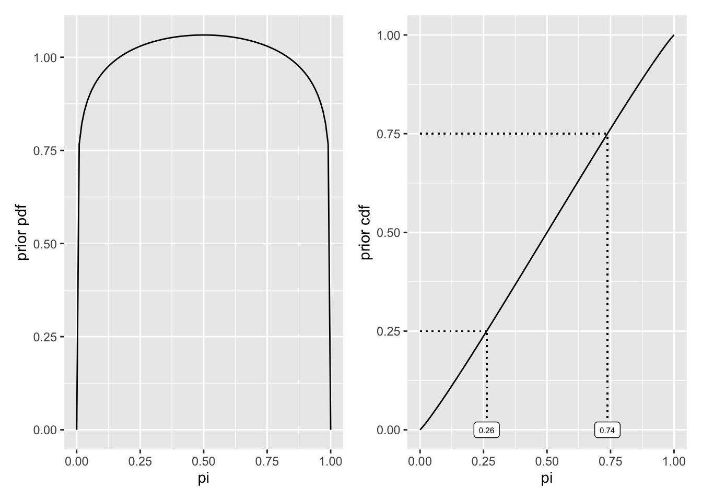

Chapter 7 Appendix: Code for Beta Prior
# load packages ----
library(tidyverse)
library(patchwork)
# create some helpful functions ----
find_mode <- function(alpha, beta) {
(alpha - 1)/(alpha + beta - 2)
}
find_mean <- function(alpha, beta) {
alpha/(alpha + beta)
}
find_sd <- function(alpha, beta) {
a <- alpha
b <- beta
v <- (a*b)/(((a + b)^2)*(a + b + 1))
sqrt(v)
}
# set alpha and beta ----
alpha <- 1.1 # pushes the left side down
beta <- 1.1 # pushes the right slide down
# compute mode, mean, sd
find_mode(alpha, beta) ## [1] 0.5find_mean(alpha, beta) ## [1] 0.5find_sd(alpha, beta)## [1] 0.2795085# plot pdf and CDF ----
gg_data <- data.frame(x = seq(0, 1, length.out = 1000))
gg_base <- ggplot(gg_data, aes(x = x))
gg_pdf <- gg_base +
geom_function(fun = dbeta, args = list(shape1 = alpha, shape2 = beta)) +
labs(x = "pi",
y = "prior pdf")
gg_cdf <- gg_base +
geom_function(fun = pbeta, args = list(shape1 = alpha, shape2 = beta)) +
geom_segment(x = qbeta(.25, alpha, beta),
xend = qbeta(.25, alpha, beta),
y = 0,
yend = 0.25,
linetype = "dotted") +
geom_segment(x = 0,
xend = qbeta(.25, alpha, beta),
y = 0.25,
yend = 0.25,
linetype = "dotted") +
annotate("label", size = 2,
x = qbeta(.25, alpha, beta),
y = 0,
label = round(qbeta(.25, alpha, beta), 2)) +
geom_segment(x = qbeta(.75, alpha, beta),
xend = qbeta(.75, alpha, beta),
y = 0,
yend = 0.75,
linetype = "dotted") +
geom_segment(x = 0,
xend = qbeta(.75, alpha, beta),
y = 0.75,
yend = 0.75,
linetype = "dotted") +
annotate("label", size = 2,
x = qbeta(.75, alpha, beta),
y = 0,
label = round(qbeta(.75, alpha, beta), 2)) +
labs(x = "pi",
y = "prior cdf")
# draw the plots ----
gg_pdf + gg_cdf